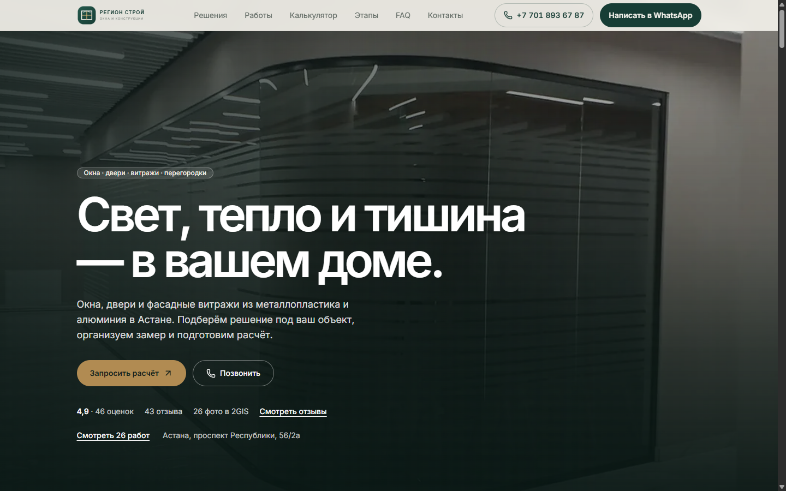
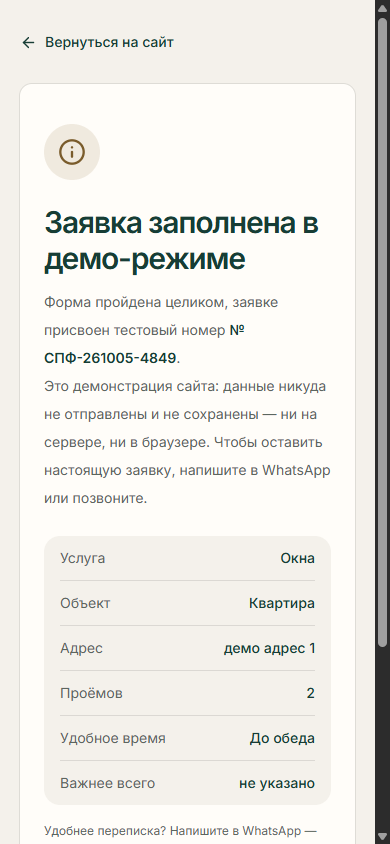
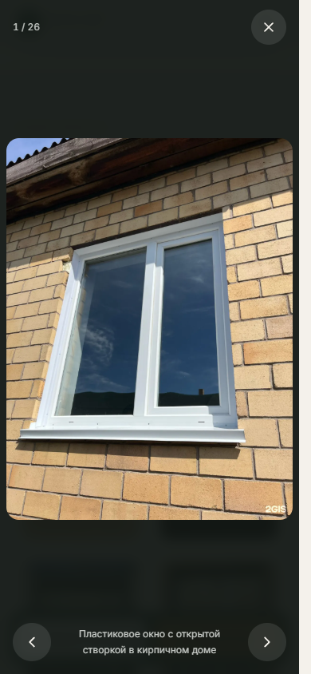
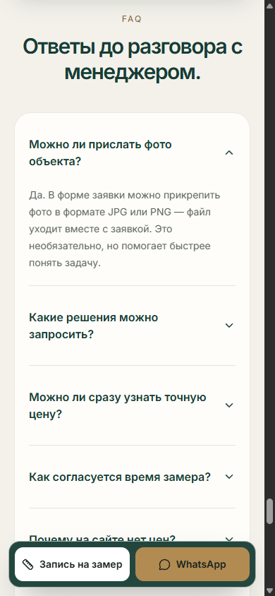
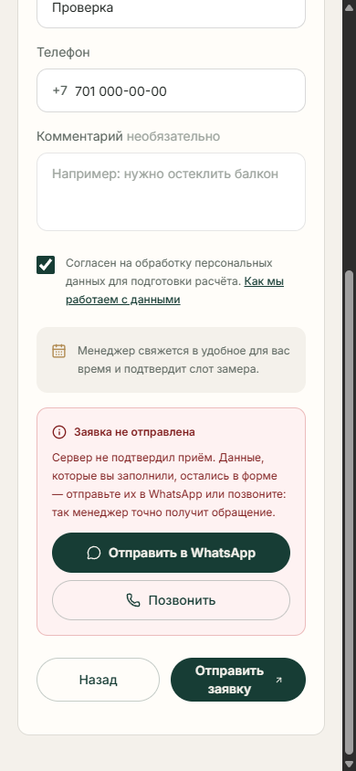
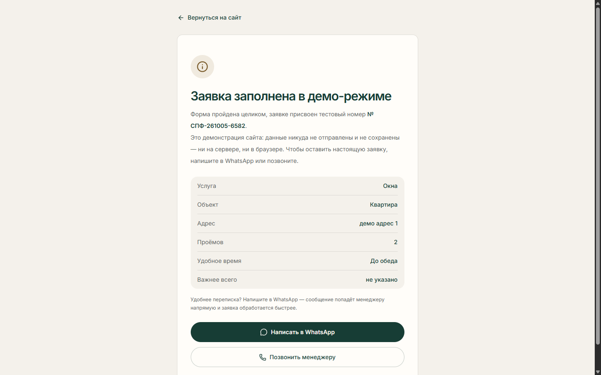

Что было в проекте
- Демонстрационная картинка вместо фотографий работ.
- Галереи, кейсов и отзывов нет вовсе.
- Маска телефона искажает казахстанские номера.
- Мёртвые ассеты шаблона Vite и служебные файлы в репозитории.
Кейс · лендинг и форма заявки
Компания по производству и монтажу окон, дверей и фасадных витражей в Астане. Задача была не «сделать красиво», а превратить сгенерированный прототип в сайт, который владелец может показать и запустить, — так, чтобы каждое утверждение на странице было подтверждено реальными данными компании.
01Точка старта
У компании уже была публичная карточка в 2ГИС: рейтинг 4,9, 43 отзыва, 26 фотографий работ, два телефона и адрес в Астане. У сайта не было почти ничего из этого — и это главная проблема, а не оформление.
02Что было не так
Ниже — не общие слова, а зафиксированные дефекты с проверкой в браузере и в сборке.
Главное изображение весило около 5,2 МБ и грузилось с внешнего CDN,
который отдавал ошибку 403. Это первое, что видел посетитель.
На сайте было 0 фотографий, 0 отзывов и 0 кейсов — при том, что в карточке компании уже лежали 26 фото и 43 отзыва. Клиент не мог увидеть результат, который получит.
Маска считала первую цифру кодом страны. Обычный ввод 7018936787
превращался в +7 (018) 936-78-7, а заявка при этом успешно
«отправлялась» — то есть менеджер получил бы неверный номер.
Главная находка: внешне работающая форма молча теряла клиента.
В сборке оставались мёртвые ассеты стартового шаблона Vite, а в репозиторий попадали служебные скрипты QA-агентов. Мелочь, но именно она отличает «сайт по шаблону» от проекта, который можно отдать заказчику.
03Что сделано
Из публичной карточки компании извлечены все 26 фотографий и все 43 отзыва дословно. Это же подтвердило факты, которые раньше нельзя было заявлять: график работы, второй телефон, перегородки, входные двери и тип предприятия «производство».
Masonry-сетка (2 колонки на мобильном, 3 на планшете, 4 на десктопе) и лайтбокс: стрелки влево-вправо, счётчик «N / 26», Escape, закрытие по фону, возврат фокуса и блокировка прокрутки. Сначала показываются 10 работ, остальные — по кнопке.
Демонстрационная картинка удалена из проекта полностью. Вместо неё — фотография
компании в WebP весом 158 КБ вместо 5,2 МБ, с
fetchpriority=high и реальными размерами. Обложка для соцсетей собрана
из того же кадра.
Маска переписана на детерминированную схему: код +7 вынесен статичным
префиксом и больше не входит в значение. Ввод 7018936787,
87018936787 и вставка +7 (701) 893-67-87 дают один и тот же
результат. Логика закрыта 22 проверками и сквозным тестом в браузере.
На сайте нет цен, гарантий, сертификатов и наград, которые нельзя подтвердить. Экран результата не говорит «заявка передана менеджеру», пока сервер не подтвердил доставку: при ошибке клиент видит честный статус, кнопки WhatsApp и телефона и не теряет заполненные данные.
JSON-LD LocalBusiness с часами работы и ссылками, динамические
sitemap.xml и robots.txt, реальная страница 404, alt для
всех 26 фотографий. В интерфейсе — focus-visible,
aria-live для калькулятора и отключение анимаций при
prefers-reduced-motion.
Node-сервер без фреймворка принимает заявки на /api/leads, отдаёт
/api/health и защищён от дублей и флуда; для деплоя подготовлены
Dockerfile и railway.toml. Один флаг
DEMO_MODE переключает сайт в режим показа: форма проходит все шаги, но
не делает ни одного сетевого запроса и ничего не сохраняет.
04Решения
Технические решения в этом проекте почти всегда выбирались не по принципу «модно», а по принципу «что выдержит эксплуатацию у небольшой компании».
Одна страница целиком статическая: сборка проходит за ≈0,3 с, хостинг копеечный, разметка, скорость и SEO под полным контролем. Конструктор дал бы быстрые правки, но забрал бы контроль над разметкой и добавил внешний рантайм.
Serverless-платформа не запускает Node-процесс: заявка туда уходила и получала
404. Приём заявок требует канала доставки, лимитов и постоянного диска,
поэтому в проекте Dockerfile и railway.toml с healthcheck
/api/health.
Чужие снимки в портфолио не использовались: все 26 кадров — материалы самой компании, у каждого указан источник, а часть снимков прислана клиентами, о чём прямо сказано в галерее. Права на 7 кадров из отзывов вынесены отдельным вопросом владельцу.
Одинаковые на вид окна отличаются в цене в разы, поэтому вместо выдуманной ставки на
сайте стоит блок «Про цену честно» с объяснением состава суммы. В коде для этого готов
флаг PRICES_APPROVED: одна строка — и в калькуляторе появляются суммы.
Пока канал доставки не подключён, надпись «заявка отправлена» была бы враньём. В
демо-режиме запрос физически невозможен: строки api/leads в собранном
бандле 0 вхождений. Клиент видит тестовый номер и пометку, что данные
никуда не ушли.
«Умная» логика с первой цифрой как кодом страны ломается на казахстанских номерах,
которые сами начинаются с 7. Вместо эвристики — фиксированный префикс
+7 и работа только с 10 локальными цифрами, плюс 22 проверки.
05Экраны
Скриншоты сделаны при проверке сборки: мобильная ширина 390 px и десктоп 1440 px.






06Было → стало
fetchpriority=high
7018936787 → +7 (018) 936-78-7
7018936787 → 701 893-67-87
Оценка — из собственной методики сравнения: 12 критериев (дизайн, UX, мобильный, конверсия, доверие, фотографии, контент, продукт, CTA, производительность, SEO, доступность) на выборке из 37 сайтов оконной тематики.
07Цифры
08Как это делалось
3 октября
Аудит мобильной версии и скорости. Первый экран перенесён с внешнего CDN на
локальный WebP: 158 КБ вместо 5,2 МБ. Добавлены
focus-visible, понятные disabled-состояния и
aria-live для калькулятора, SVG-логотип и отключение анимаций при
prefers-reduced-motion. Собрана SEO-разметка
LocalBusiness, проверен серверный код.
4 октября
Сравнение с 37 сайтами ниши и перестройка по итогам. Из карточки 2ГИС извлечены
26 фотографий и 43 отзыва, собрана галерея с лайтбоксом, раздел кейсов и блок
отзывов. Исправлена маска телефона. Подтверждены и добавлены график работы, второй
телефон, перегородки, входные двери и тип «производство». Появились финальный
CTA-блок, подвал, sitemap.xml, robots.txt, страница 404 и
обложка для соцсетей из реального кадра.
5 октября
Переработка шапки, исправление контраста по WCAG, иерархии заголовков, focus-trap и security-заголовков. Включён демо-режим: форма проходит все шаги, но не делает сетевых запросов и ничего не пишет в браузер. Удалён мёртвый профиль Instagram. Замеры на шести ширинах: ноль ошибок консоли, ноль переполнений.
09Результат для компании
Это не метрики трафика — такие цифры появятся только после запуска. Это то, что уже изменилось в самом сайте.
26 работ и шесть отзывов вместо демонстрационной картинки и обещаний.
Рейтинг и отзывы указаны вместе со ссылкой на карточку компании в 2ГИС — клиент может сверить цифры сам.
При сбое клиент видит честный статус, данные формы сохраняются, а рядом — WhatsApp и телефон.
На сайте нет выдуманных цен, гарантий, сертификатов и наград — только подтверждённые факты.
DEMO_MODE = false плюс канал доставки заявок, и сайт переходит в рабочий
режим без правок вёрстки.
Новые фото кладутся в папку без правок кода, структура кейсов типизирована, прайс включается одной константой.
10Что осталось
В портфолио принято показывать только сильную часть. Здесь — весь список того, что не сделано, с причиной: это данные заказчика или инфраструктура, а не код.
PRICES_APPROVED, который
включает суммы в калькуляторе.
CRM_WEBHOOK_URL пуста, а без постоянного диска заявки не
переживут передеплой — порядок настройки описан в документации проекта.
11Дальше
По итогам аудита самое выгодное вложение — не код, а материалы: профессиональная съёмка 8–12 кадров своих объектов поднимет качество фотографий, а утверждение прайса закроет единственное, где сайт объективно проигрывает конкурентам.
12Источники
Кейс собран по отчётам проекта: аудит, бенчмарк, проверки демо-режима и скриншоты лежат в репозитории рядом с кодом. Даты всех проверок — 3–5 октября 2026.
ignatvanuskin-sys/SPF-Region-Stroy-manus